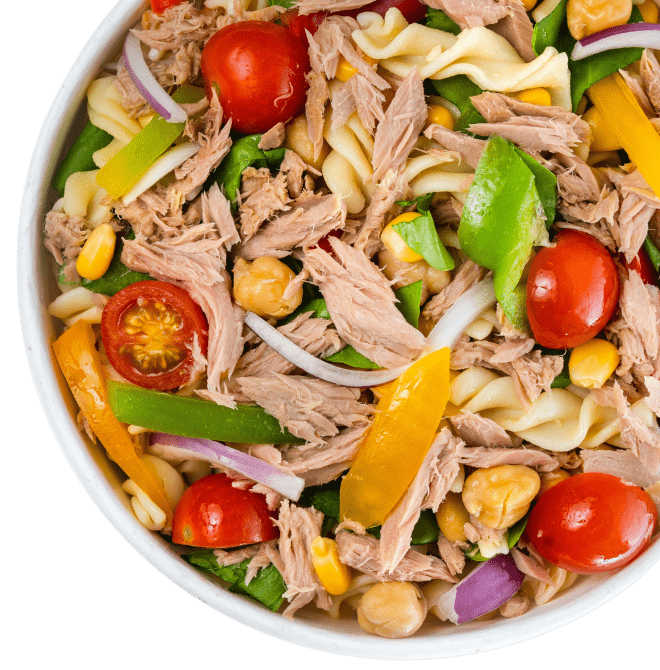
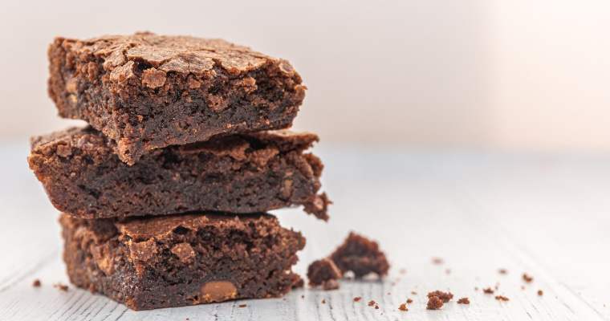
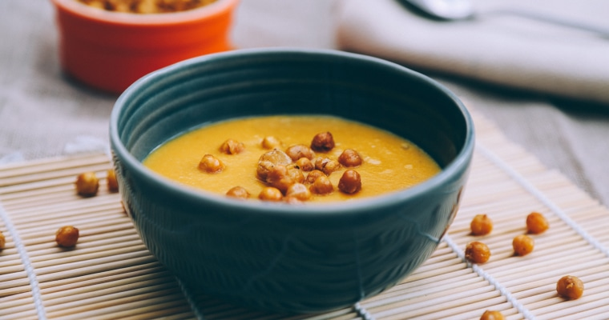
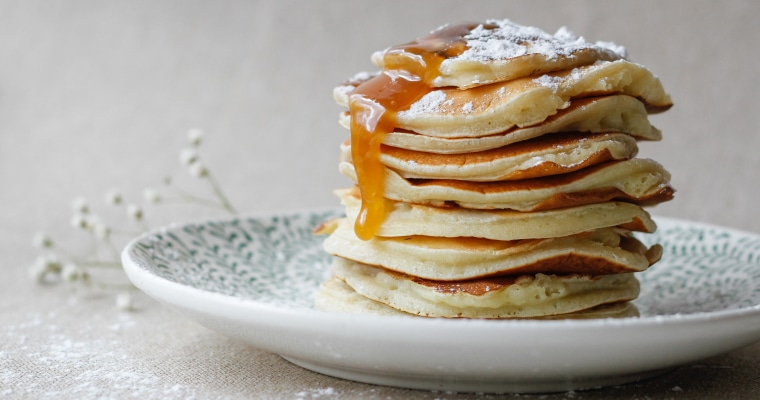
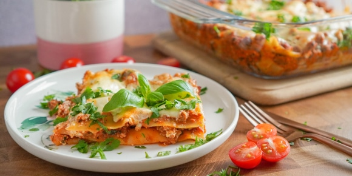
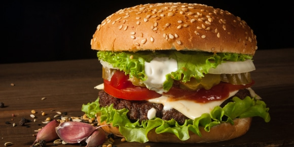
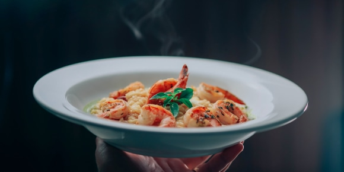
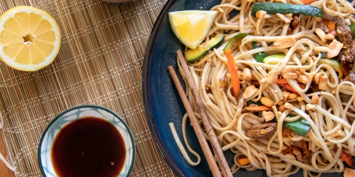
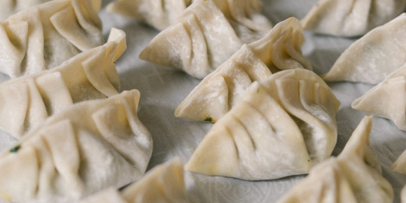
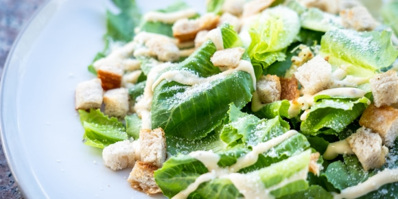

Каталог рецептов
На нашем сайте собрано около 50 000 рецептов. И это не просто огромный массив кулинарных рецептур, а проверенные на домашних кухнях любимые блюда наших пользователей.
Салат с тунцом
(на обед)

Лучшие рецепты
- 
- 
Крем-суп из тыквы
Тыквенный солено-сладкий суп с добавлением ростков пшеницы
12 ингредиентов - 
Все рецепты
- 
Лазанья
Традиционное итальянское блюдо с сыром, томатным соусом и мясным фаршем
10 ингредиентов - 
Гамбургер
Классический американский сендвич с мясной котлетой, салатом и огурчиками
8 ингредиентов - 
Ризотто с морепродуктами
Один из многочисленных вариантов знаменитого итальянского блюда
9 ингредиентов - 
Вок с говядиной терияки
Лапша в кисло-сладком соусе. В этот блюде сочетается все: овощи, лапша и мясо
6 ингредиентов - 
Домашние пельмени
Традиционное блюдо русской кухни с начинкой из рубленого мяса
5 ингредиентов - 
Салат Цезарь
Классический салат американской кухни с курицей и овощами
10 ингредиентов